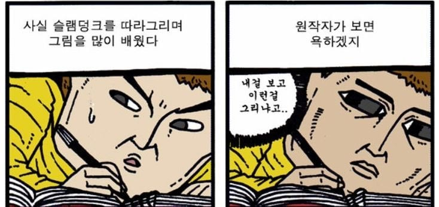

슬램덩크 따라그려서 들키는 게 두려운 웹툰 작가
댓글
정작 슬덩도 nba 사진보고 그린거 의혹 많지않던가ㅋㅋ
의혹이 아니라 200%임 ㅋㅋㅋ
트레이싱햇지 조석은 따라한게 저거라 ㄱㅊ
그런 나쁜말은 ㄴㄴㄴ
그건 동작이나 구도를 베껴 그린 거고, 조석은 그림체를 따라 그리면서 연습했는데도 실력이 저 수준이라는 말이라서 전혀 다른 얘기임
의혹아님 NBA에서 저작권으로 걸면 무조건 짐
이건 어쩔도리가 없다
그림의 유사성이 없으니 보고 베낀게 아닙니다 껄껄
정작 김성모는 떳떳함 ㅋㅋ
조석이 그린 덴젤 워싱턴은 실화 그 자체지
아니 어딜 봐서 ㅋㅋㅋㅋ
근데 그림구도 직접 거울보고 사진찍어서 구도 그려도 트레이싱이야?
대고 그리면 일단 다 트레이싱이야 근데 어차피 본인이 찍은 사진이라면 그 사진 저작권도 본인에게 있으니까 괜찮음 남의 작품에 대고 그리고 그걸 지 작품이라고 우기는게 문제인거임
그럼 잡지모델들 포즈를 보고 직접 자기가 거울에 포즈잡고 사진찍어서 그리면 그건 자작이야?
포즈에는 딱히 저작권이랄게 없음
근데 이제 그걸 대고 그대로 따서 그렸을때 트레이싱이라는 문제가 발생하는거지 잡지든 사진이든 저작권이 존재하니까 ㅇㅇ
포즈도 문제가 생기는 경우가 있기는한데 딱 봐도 여기에 나오는 구도랑 포즈다! 라고 떠올릴수있을만큼의 유명한 포즈정도면 문제가 될수는 있음ㅇㅇ
잡지모델 포즈 보고 자기가 포징해서 찍고 그걸 트레이싱하면 사람들이 그 잡지모델 사진과 대조해 봤을때 포즈말곤 닮은 부분이 안나오겠지 트레이싱 여부도 본인말고는 아무도 모를거니까
근데 이제 모델도 아닌 일반인(본인) 사진을 대고 그렸을때 이쁘게 나오겠느냐는 별개의 문제겠지만..
직접 찍어서 그려도 트레이싱은 맞지만
저작권 문제가 없음
사실 트레이싱이 문제가 되는 건
남의 걸 가져다가 그리는 경우가 많아서 그럼
넌 트레이싱 해라
개그컷만 따라 그렸나
ㅁㄷㄱㄷㄹ